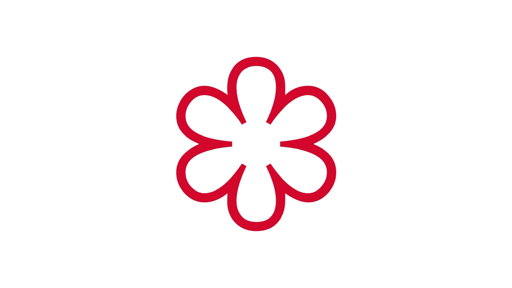
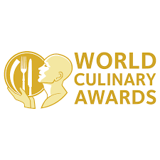

O RESTORANU KEŠINA
Restoran Kešina otvoren je 2005. godine s misijom pružiti jedinstvenu gastronomsku iskustvo koristeći lokalne i svježe namirnice. S posebnom pažnjom biramo svaki sastojak kako bi naši gosti uživali u vrhunskim jelima koja spajaju tradiciju i modernu kuhinju.
Posjedujemo Michelinovu zvjezdicu, a naš restoran je prepoznat kao jedan od najboljih u regiji. Naša kuhinja, temeljena na izvrsnim svježim namirnicama, oduševit će vas bogatstvom okusa i kvalitete.
Imamo dugogodišnje iskustvo u pripremi vrhunskih jela i specijaliteta, a naša strast za kuhanjem i ljubav prema gastronomiji omogućuju nam da stalno inoviramo i nudimo nove kreacije koje će vas oduševiti.
Svaka posjeta Restoranu Kešina je poseban trenutak, gdje uz svježe i kvalitetne namirnice pružamo nezaboravno iskustvo objedovanja. Uživajte u ambijentu našeg restorana koji je dizajniran tako da pruži udobnost, luksuz i privatnost svakom gostu.
Osim svakodnevnih specijaliteta, nudimo i posebne degustacije i menije za sve vrste prigoda, bilo da se radi o obiteljskim okupljanjima ili poslovnim ručkovima.
Naš tim stručnjaka u restoranu uvijek je spreman za pružanje najboljeg mogućeg iskustva, a naša ljubav prema gastronomiji je nešto što nas vodi u svakom jelu koje pripremimo.
NAGRADE
- Michelinova zvjezdica (2023) 
- Najbolji restoran godine – Culinary Awards 2021 
- Top 10 restorana u Hrvatskoj – 2022